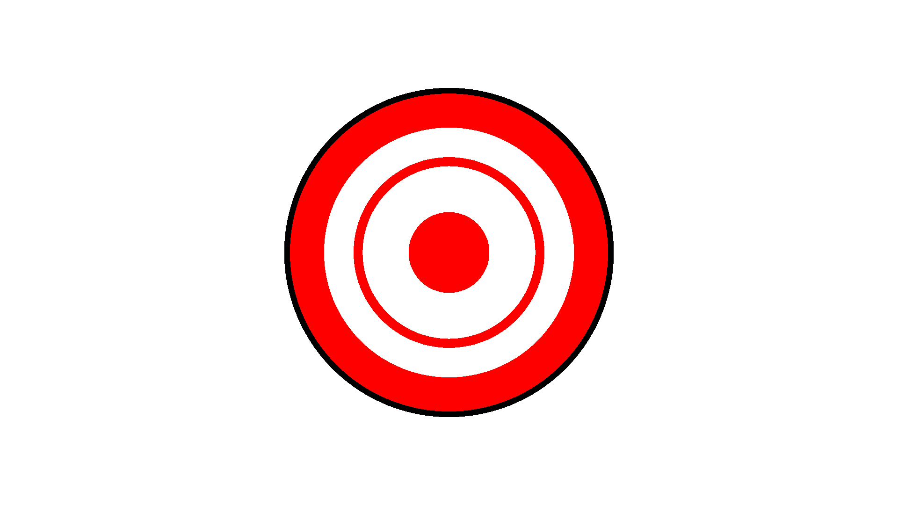
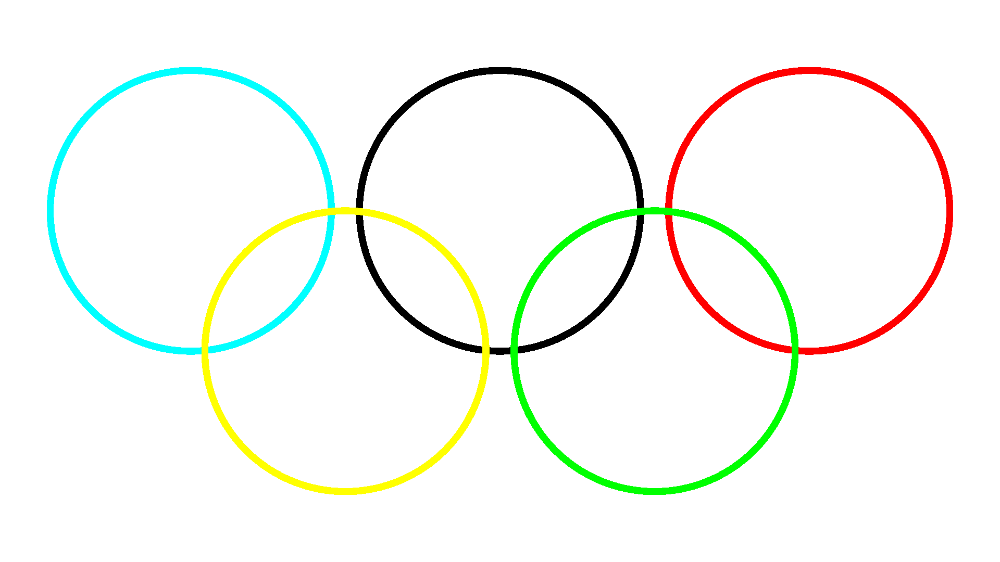
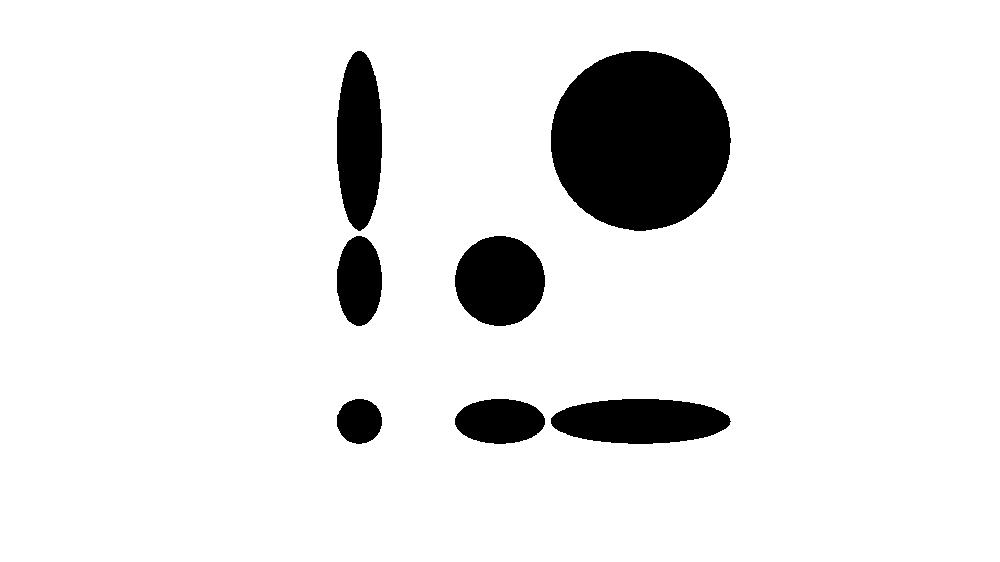
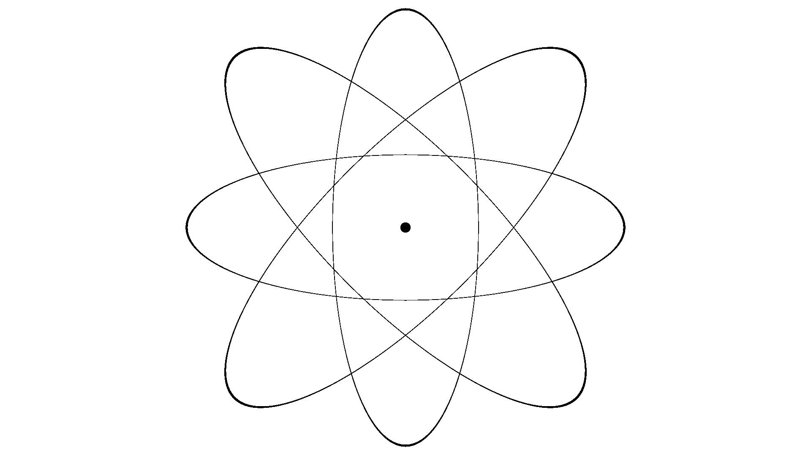
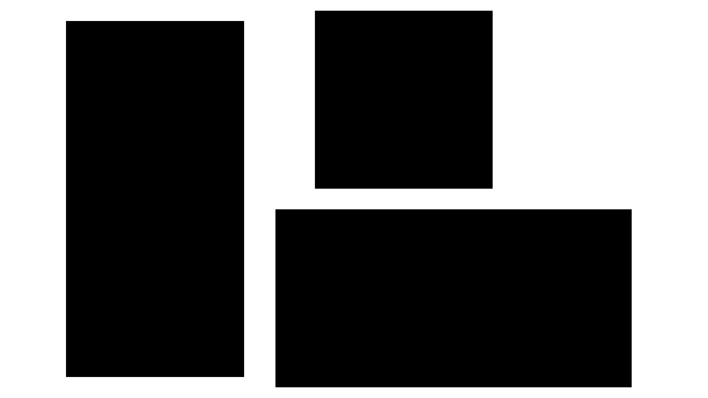
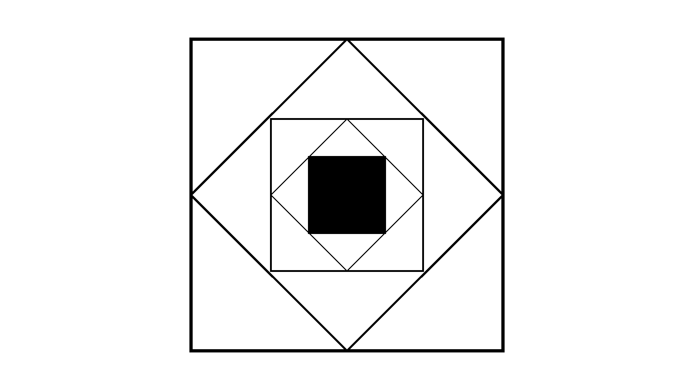
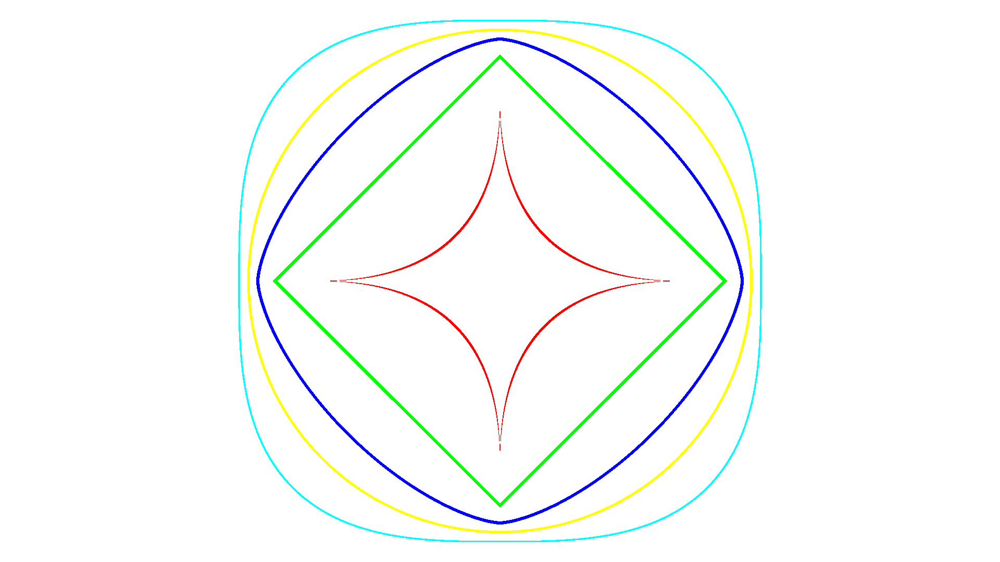
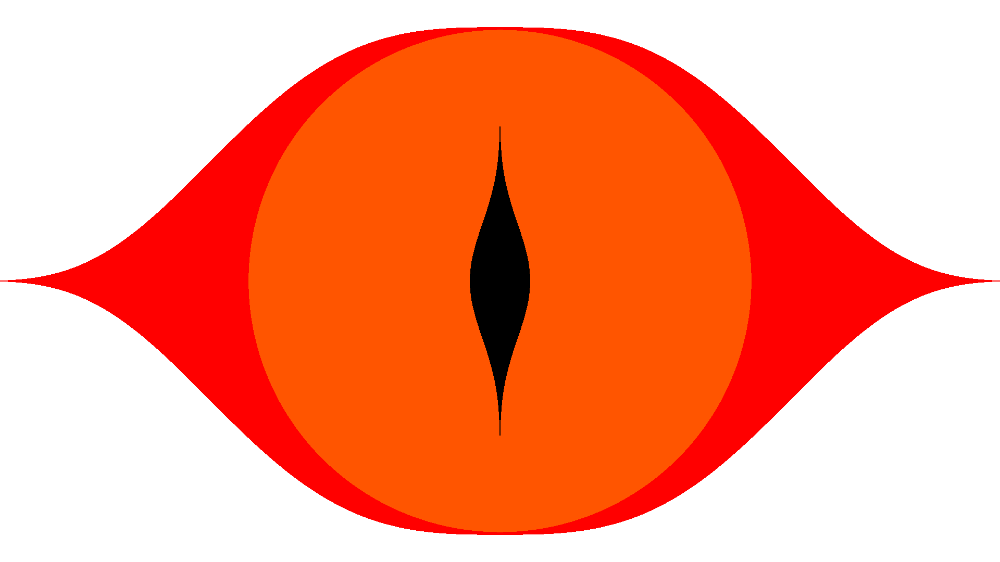

Shape¶
-
class
arlunio.shape.Circle(*, xc=0, yc=0, r=0.8, pt=None, x0=0, scale=1, stretch=False, y0=0)[source]¶ Inputs:
width: intheight: intBases:
Produces:
We define a circle using the following equality.
\[(x - x_c)^2 + (y - y_c)^2 = r^2\]-
xc¶ Corresponds with the \(x_c\) variable in the equation above and defines the \(x\)-coordinate of the circle’s center.
-
yc¶ Corresponds with the \(y_c\) variable in the equation above and defines the \(y\)-coordinate of the circle’s center.
-
r¶ Corresponds with the \(r\) variable in the equation above and defines the radius of the circle.
-
pt¶ If
None, then all points within the radius of the circle will be considered to be part of it. If this is set to some positive number then all points between radii(1 - pt) * rand(1 + pt) * rwill be considered part of the circle.
Examples
Combining a few circles we’re able to draw a target:¶
import arlunio as ar import arlunio.image as image import arlunio.shape as shape @ar.definition def Target(width: int, height: int) -> image.Image: img = image.new((width, height), color="white") parts = [ (shape.Circle(pt=0.02), "#000"), (shape.Circle(r=0.75, pt=0.12), "#f00"), (shape.Circle(r=0.6, pt=0.05), "#f00"), (shape.Circle(r=0.4), "#f00"), ] for part, color in parts: img = image.fill( part(width=width, height=height), foreground=color, image=img ) return img target = Target() img = target(width=1920, height=1080)
Making use of the
xcandycattributes we can produce an approximation of the olympics logoimport arlunio as ar import arlunio.image as image import arlunio.shape as shape @ar.definition def OlympicRings(width: int, height: int, *, spacing=0.5, pt=0.025): dy = spacing / 4 dx = spacing / 2 args = {"scale": 0.5, "r": spacing, "pt": pt} img = image.new((width, height), color="white") rings = [ (shape.Circle(yc=dy, xc=-(2.2 * dx), **args), "#0ff"), (shape.Circle(yc=dy, **args), "#000"), (shape.Circle(yc=dy, xc=(2.2 * dx), **args), "#f00"), (shape.Circle(yc=-dy, xc=-(1.1 * dx), **args), "#ff0"), (shape.Circle(yc=-dy, xc=(1.1 * dx), **args), "#0f0") ] for ring, color in rings: img = image.fill( ring(width=width, height=height), foreground=color, image=img ) return img rings = OlympicRings() img = rings(width=1920, height=1080)
-
-
class
arlunio.shape.Ellipse(*, xc=0, yc=0, a=2, b=1, r=0.8, pt=None, x0=0, scale=1, stretch=False, y0=0)[source]¶ Inputs:
width: intheight: intBases:
Produces:
An ellipse can be defined using the following equality.
\[\left(\frac{x - x_c}{a}\right)^2 + \left(\frac{y - y_c}{b}\right)^2 = r^2\]-
xc¶ Corresponds with the \(x_c\) variable in the equation above and defines the \(x\)-coordinate of the ellipse’s center.
-
yc¶ Corresponds with the \(y_c\) variable in the equation above and defines the \(y\)-coordinate of the ellipse’s center.
-
r¶ Corresponds with the \(r\) variable in the equation above and controls the overall size of the ellipse.
-
a¶ Corresponds with the \(a\) variable in the equation above and controls the width of the ellipse.
-
b¶ Corresponds with the \(b\) variable in the equation above and controls the height of the ellipse.
-
pt¶ If
Nonethen all points within the radius of the ellipse will be considered to be part of it. If this is set to some positive number then all points between radii(1 - pt) * rand(1 + pt) * rwill be considered part of the ellipse.
Examples
aandbtogether determine the overall shape of the ellipse. Increasing the value ofawill stretch the ellipse width wise, increasingbhas a similar effect for the height. It’s worth noting that it’s the ratio of these 2 values rather than their absolute values that has a greater effect on the shape of the ellipse. Ifa = bthen the equation simplifies to that of a circleimport arlunio as ar import arlunio.image as image import arlunio.shape as shape @ar.definition def EllipseDemo(width: int, height: int): img = image.new(width, height, color="white") ellipses = [ shape.Ellipse(xc=-0.5, yc=-0.5, a=0.5, b=0.5, r=0.4), shape.Ellipse(yc=-0.5, a=1, b=0.5, r=0.4), shape.Ellipse(xc=0.5, yc=-0.5, a=2, b=0.5, r=0.4), shape.Ellipse(a=1, b=1, r=0.4), shape.Ellipse(xc=0.5, yc=0.5, a=2, b=2, r=0.4), shape.Ellipse(xc=-0.5, a=0.5, b=1, r=0.4), shape.Ellipse(xc=-0.5, yc=0.5, a=0.5, b=2, r=0.4) ] for ellipse in ellipses: img = image.fill(ellipse(width=1920, height=1080), image=img) return img demo = EllipseDemo() img = demo(width=1920, height=1080)
Playing around with the values and the coordinate inputs it’s possible to draw something that looks like a diagram of an atom:¶
import arlunio as ar import arlunio.image as image import arlunio.math as math import arlunio.shape as shape @ar.definition def Atom(x: math.X, y: math.Y): img = None ellipses = [ (shape.Ellipse(a=1.5, b=0.5, pt=0.005), x, y), (shape.Ellipse(a=1.5, b=0.5, r=1, pt=0.005), x + y, y - x), (shape.Ellipse(a=0.5, b=1.5, pt=0.005), x, y), (shape.Ellipse(a=1.5, b=0.5, r=1, pt=0.005), x - y, x + y), (shape.Ellipse(a=1, b=1, r=0.15), x, y) ] bg = "white" for ellipse, ex, ey in ellipses: img = image.fill(ellipse(x=ex, y=ey), image=img, background=bg) bg = None return img atom = Atom() img = atom(width=1920, height=1080)
-
-
class
arlunio.shape.Rectangle(*, xc=0, yc=0, size=0.6, ratio=1.618, pt=None, x0=0, scale=1, stretch=False, y0=0)[source]¶ Inputs:
width: intheight: intBases:
Produces:
A rectangle:¶
-
xc¶ Defines the \(x\)-coordinate of the center of the rectangle
-
yc¶ Defines the \(y\)-coordinate of the center of the rectangle
-
size¶ Defines the area of the rectangle
-
ratio¶ Defines the ratio of the width to the height of the rectangle
-
pt¶ If
Nonethen all points within the rectangle’s border will be considered to be part of it. If set to some positive number then all points within(1 - pt) * sizeto(1 + pt) * sizeof the border will be considered to be part of the rectangle.
Examples
import arlunio as ar from arlunio.shape import Rectangle from arlunio.image import fill @ar.definition def RectangleDemo(width: int, height: int): image = None rects = [ Rectangle(xc=-1, size=0.4, ratio=0.5), Rectangle(xc=0.25, yc=0.5, size=0.2, ratio=1), Rectangle(xc=0.5, yc=-0.5, size=0.4, ratio=2) ] for r in rects: image = fill(r(width=width, height=height), image=image) return image demo = RectangleDemo() image = demo(width=1920, height=1080)
-
-
class
arlunio.shape.Square(*, xc=0, yc=0, size=0.8, pt=None, x0=0, scale=1, stretch=False, y0=0)[source]¶ Inputs:
width: intheight: intBases:
Produces:
A square:¶
-
xc¶ Defines the \(x\)-coordinate of the square’s center
-
yc¶ Defines the \(y\)-coordinate of the square’s center
-
size¶ Defines the size of the square, sides will have a length of
2 * size
-
pt¶ If
Nonethen all points within the square’s border will be considered to be part of it. If set to some positive number then all points within(1 - pt) * sizeto(1 + pt) * sizeof the border will be considered to be part of the square.
Example
import arlunio as ar import arlunio.image as image import arlunio.math as math import arlunio.shape as shape @ar.definition def SquareDemo(x: math.X, y: math.Y): img = None squares = [ (shape.Square(pt=0.01), x, y), (shape.Square(pt=0.01), x + y, x - y), (shape.Square(size=0.39, pt=0.01), x, y), (shape.Square(size=0.39, pt=0.01), x + y, x - y), (shape.Square(size=0.2), x, y), ] bg = "white" for square, sx, sy in squares: img = image.fill(square(x=sx, y=sy), image=img, background=bg) bg = None return img square = SquareDemo() img = square(width=1920, height=1080)
-
-
class
arlunio.shape.SuperEllipse(*, xc=0, yc=0, a=1, b=1, n=3, r=0.8, m=None, pt=None, x0=0, scale=1, stretch=False, y0=0)[source]¶ Inputs:
width: intheight: intBases:
Produces:
We define a SuperEllipse by the following equality.
\[\left|\frac{(x - x_c)}{a}\right|^n + \left|\frac{(y - y_c)}{b}\right|^m = r\]-
xc¶ Corresponds with the \(x_c\) variable in the equation above and defines the \(x\)-coordinate of the center of the super ellipse.
-
yc¶ Corresponds with the \(y_c\) variable in the equation above and defines the \(y\) -coordinate of the center of the super ellipse.
-
r¶ Corresponds with the \(r\) variable in the equation above and controls the size of the super ellipse.
-
a¶ Corresponds with the \(a\) variable in the equation above and controls the width of the super ellipse.
-
b¶ Corresponds with the \(b\) variable in the equation above and controls the height of the super ellipse.
-
n¶ Corresponds with the \(n\) variable in the equation above and controls the profile of the curve far from \(x = 0\)
-
m¶ Corresponds with the \(m\) variable in the equation above and controls the profile of the curve close to \(x = 0\). If
m = None(default) then it will be set to the value ofn.
-
pt¶ If
Nonethen all points within the radius of the super ellipse will be considered to be part of it. If this is set to some positive number then all points between radii(1 - pt) * rand(1 + pt) * rwill be considered part of the super ellipse.
Examples
Being a generalisation of the regular
arlunio.shape.Ellipsedefinition most of the attributes will have a similar effect on the outcome so be sure to check it out for additional examples. For theSuperEllipsedefinition the most interesting attributes arenandmgreatly affect the shape of the super ellipse.import arlunio as ar import arlunio.image as image import arlunio.shape as shape @ar.definition def SuperEllipseDemo(width: int, height: int): img = image.new(width, height, color="white") ellipses = [ (shape.SuperEllipse(n=0.5, pt=0.01),'#f00'), (shape.SuperEllipse(n=1, pt=0.01),'#0f0'), (shape.SuperEllipse(n=1.5, pt=0.01), '#00f'), (shape.SuperEllipse(n=2, pt=0.01), '#ff0'), (shape.SuperEllipse(n=3, pt=0.01), '#0ff') ] for ellipse, color in ellipses: img = image.fill( ellipse(width=1920, height=1080), foreground=color, image=img ) return img demo = SuperEllipseDemo() img = demo(width=1920, height=1080)
By default if you don’t specify a value for
mit will inherit the value assigned ton. However if you setmto a different value then you can get even more interesting results!“Eye of Sauron”:¶
import arlunio as ar import arlunio.image as image import arlunio.shape as shape @ar.definition def Sauron(width: int, height: int): img = image.new(width, height, color="white") ellipses = [ (shape.SuperEllipse(a=2, n=3, m=0.2, r=0.98),'#f00'), (shape.SuperEllipse(n=2),'#f50'), (shape.SuperEllipse(n=0.1, m=2), '#000'), ] for ellipse, color in ellipses: img = image.fill( ellipse(width=1920, height=1080), foreground=color, image=img ) return img eye = Sauron() img = eye(width=1920, height=1080)
-